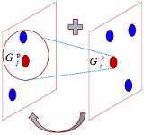
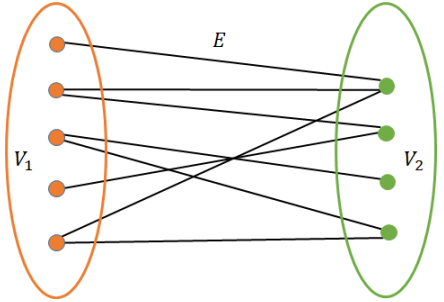
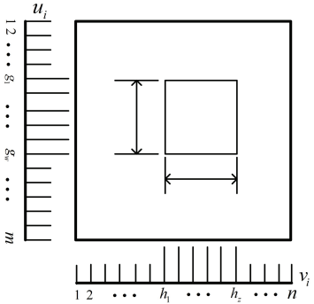
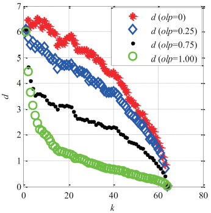

Home
I am currently an Associate Professor and director of the Visual Computing and Machine Learning Lab (VCML Lab) with School of Software Engineering at Pingdingshan University. I received my PhD from Zhejiang University in 2017 and my Master degree from Henan University in 2008. I am broadly interested in the fields of artificial intelligence, machine learning (deep learning), visual computing (computer vision and graphics), robotics and data visualization. I am a recipient of the Leader of Academic Technology of Henan Provincial Department of Education; the Leader of Academic Technology of Pingdingshan City, and the Outstanding Young Technologist of Pingdingshan City. We are recruiting undergraduate and postgraduate students. If you are interested, please send me your CV and transcripts.
A few visiting positions in machine learning and computer vision are available.
My research interests lie in common key issues such as perception, cognition, and decision-making. I focus on artificial intelligence, machine learning (deep learning), computer vision and graphics, robotics, data visualization, and their applications in intelligent transportation (e.g., traffic scene anomaly detection, road vehicle violation detection, traffic sign auxiliary detection, driver behavior detection), intelligent security (e.g., object detection and tracking, activity recognition), intelligent medical care (e.g., medical image understanding and oral digital medical technology), intelligent manufacturing (e.g., product quality testing, product intelligent rating, product production process visualization), etc.
|
|  |
Jingli Gao, Chenglin Wen, Meinqin Liu. Robust Small Target Co-Detection from Airborne Infrared Image Sequences. Sensors. 2017, 17(10): 2242. [PDF][CODE] |
|  |
Jingli Gao, Chenglin Wen, Zhejing Bao, Meiqin Liu. Detecting slowly moving infrared targets using temporal filtering and association strategy Frontiers of Information Technology & Electronic Engineering. 2016, 17(11): 1176-1185. [PDF][CODE] |
|  |
Jingli Gao, Chenglin Wen, Meiqin Liu. A two-layer detection model for infrared slow low-altitude targets[C]. 2017 Chinese Automation Congress (CAC), Jinan, China, 2017.10.20-10.22. [PDF][CODE] |
|  |
Gao Jing-li, Wen Cheng-lin , Liu Mei-qin. Low-speed small target detection based on SVD and superposition[J]. Shanghai Jiaotong Daxue Xuebao/Journal of Shanghai Jiaotong University, 2015, 49(6):876-883. [PDF][CODE] |